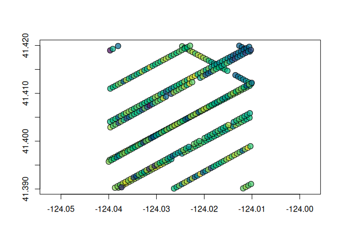

Fast Cloud-optimized partial reading of GEDI and ICESat-2 HDF5 data from R. Only the bytes needed for the requested spatial/temporal subset are fetched over HTTP, avoiding multi-gigabyte downloads.
Installation
Requires a Rust toolchain (cargo + rustc).
# install.packages("pak")
pak::pak("belian-earth/spacelaser")Authentication
All reads go through NASA Earthdata, which requires a free account. Register at https://urs.earthdata.nasa.gov/.
Credentials can be supplied in any of the following ways:
Environment variables — set
EARTHDATA_USERNAMEandEARTHDATA_PASSWORD. Convenient for CI and shell sessions.A
.netrcfile — add an entry forurs.earthdata.nasa.govto~/.netrc(or_netrcon Windows). spacelaser will read it directly.earthdatalogin— the simplest option if you don’t already have a netrc set up:
# install.packages("earthdatalogin")
earthdatalogin::edl_netrc()This writes a netrc for you and is interoperable with other R Earthdata tools.
Example with GEDI L2A
library(spacelaser)
bbox <- sl_bbox(-124.04, 41.39, -124.01, 41.42)
granules <- sl_search(
bbox,
product = "L2A",
date_start = "2022-01-01",
date_end = "2023-01-01"
)
#> ℹ Searching CMR for GEDI L2A granules
#> ✔ Searching CMR for GEDI L2A granules [2.9s]
#>
#> ✔ Found 9 GEDI L2A granules.
gedi2a <- sl_read(granules)
#> ℹ Reading L2A from 9 granules
#> ✔ Read 647 footprints from 20 beams.✔ Reading L2A from 9 granules [1m 2.3s]
gedi2a
#> # A tibble: 647 × 121
#> beam shot_number time lat_lowestmode lon_lowestmode
#> <chr> <int64> <dttm> <dbl> <dbl>
#> 1 BEAM1000 2.e17 2022-11-25 06:16:52 41.4 -124.
#> 2 BEAM1000 2.e17 2022-11-25 06:16:52 41.4 -124.
#> 3 BEAM1000 2.e17 2022-11-25 06:16:52 41.4 -124.
#> 4 BEAM1000 2.e17 2022-11-25 06:16:52 41.4 -124.
#> 5 BEAM1000 2.e17 2022-11-25 06:16:53 41.4 -124.
#> 6 BEAM1011 2.e17 2022-11-25 06:16:52 41.4 -124.
#> 7 BEAM1011 2.e17 2022-11-25 06:16:52 41.4 -124.
#> 8 BEAM1011 2.e17 2022-11-25 06:16:52 41.4 -124.
#> 9 BEAM1011 2.e17 2022-11-25 06:16:52 41.4 -124.
#> 10 BEAM1011 2.e17 2022-11-25 06:16:52 41.4 -124.
#> # ℹ 637 more rows
#> # ℹ 116 more variables: degrade_flag <int>, quality_flag <int>,
#> # sensitivity <dbl>, solar_elevation <dbl>, elev_lowestmode <dbl>,
#> # elev_highestreturn <dbl>, energy_total <dbl>, num_detectedmodes <int>,
#> # rh0 <dbl>, rh1 <dbl>, rh2 <dbl>, rh3 <dbl>, rh4 <dbl>, rh5 <dbl>,
#> # rh6 <dbl>, rh7 <dbl>, rh8 <dbl>, rh9 <dbl>, rh10 <dbl>, rh11 <dbl>,
#> # rh12 <dbl>, rh13 <dbl>, rh14 <dbl>, rh15 <dbl>, rh16 <dbl>, rh17 <dbl>, …
g <- gedi2a[gedi2a$quality_flag == 1, ]
plot(
g$geometry,
pch = 21,
cex = 1.5,
bg = hcl.colors(100, "Viridis", alpha = 0.7)[
findInterval(g$rh98, seq(0, 100), all.inside = TRUE)
]
)
Exploring other products
sl_columns() lists what a product offers. All 12 GEDI and ICESat-2 products supported by spacelaser use the same two verbs (sl_search() → sl_read()); only the product string and column names change.
# ICESat-2 photon-level data — full column inventory
sl_columns("ATL03", set = "all")
#> lat_ph lon_ph h_ph
#> "heights/lat_ph" "heights/lon_ph" "heights/h_ph"
#> delta_time signal_conf_ph dist_ph_across
#> "heights/delta_time" "heights/signal_conf_ph" "heights/dist_ph_across"
#> dist_ph_along pce_mframe_cnt ph_id_channel
#> "heights/dist_ph_along" "heights/pce_mframe_cnt" "heights/ph_id_channel"
#> ph_id_count ph_id_pulse quality_ph
#> "heights/ph_id_count" "heights/ph_id_pulse" "heights/quality_ph"
#> signal_class_ph weight_ph
#> "heights/signal_class_ph" "heights/weight_ph"Supported products
Why spacelaser
The standard R workflow for GEDI / ICESat-2 data is to download whole HDF5 granules, then filter locally. For a typical spatial subset query that wastes minutes and gigabytes — the file you’re filtering is usually orders of magnitude larger than the answer you actually want.
Spacelaser sends HTTP range requests against the remote files and returns just the rows that fall inside your bounding box, with no local caching needed.
On a representative Mondah Forest workload (11 GEDI L2A granules, two years of coverage, 1,376 matching shots) spacelaser completes in ~60 s versus ~1,170 s for a full-granule download + hdf5r read — around 19× quicker for the same 112 shared columns, bit-for-bit identical output. See benchmarks/ for methodology and comparisons with other partial-read and pre-indexed approaches.
Acknowledgements
spacelaser is a Rust reimplementation of the partial-HDF5 reading approach pioneered by h5coro (NASA SlideRule Earth). The core idea is theirs: targeted HTTP range requests against cloud-hosted HDF5 granules rather than downloading whole files. This package brings that idea to R with a GEDI/ICESat-2-specific API and a ground-up Rust parser.